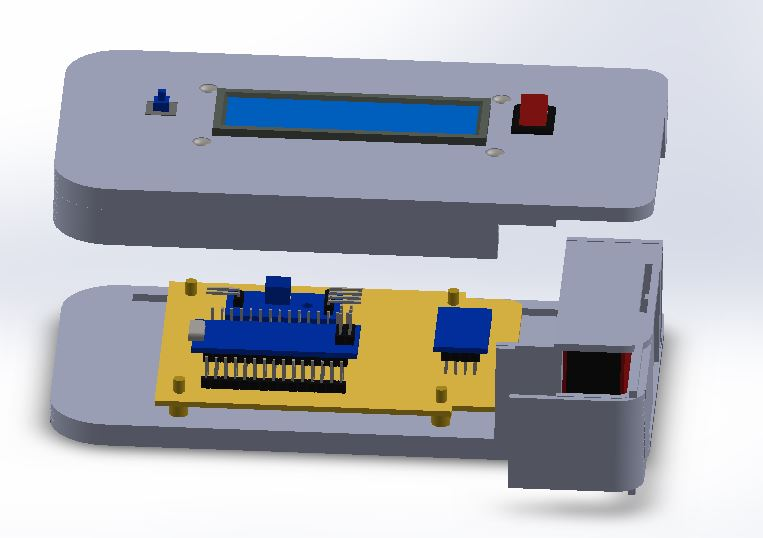
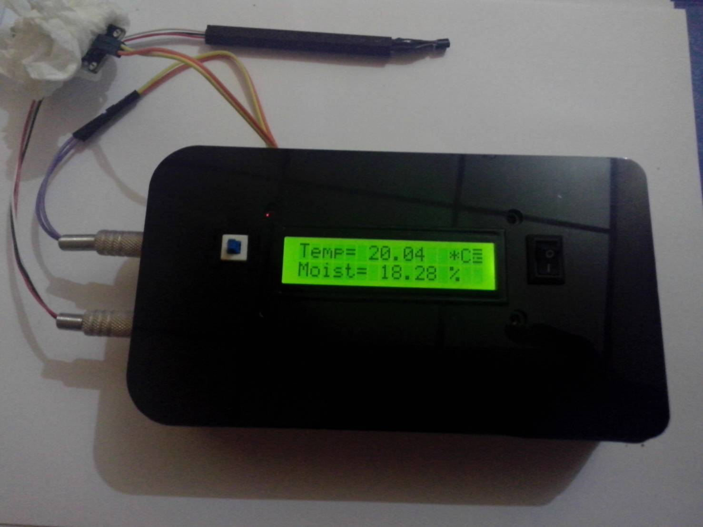

Beranda
Tujuan
Sistem sensor ini kami buat untuk menyelesaikan tugas Kerja Praktek yang diberikan oleh BMKG. Kami merakit sebuah sensor kelembapan tanah dan temperatur tanah dengan menggunakan mikrokontroler Arduino yang dihubungkan ke Cloud Server sehingga dapat terbaca pada Web ini.
Produk Kerja Praktek
|  |  |
|---|---|
| Hasil Desain | Barang Jadi |
Deskripsi
Sistem sensor ini kami buat untuk menyelesaikan tugas Kerja Praktek yang diberikan oleh BMKG. Kami merakit sebuah sensor kelembapan tanah dan temperatur tanah dengan menggunakan mikrokontroler Arduino yang dihubungkan ke Cloud Server sehingga dapat terbaca pada Web ini.